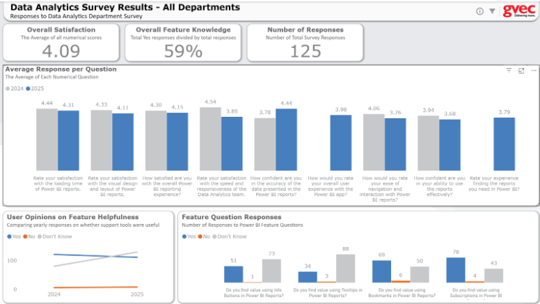
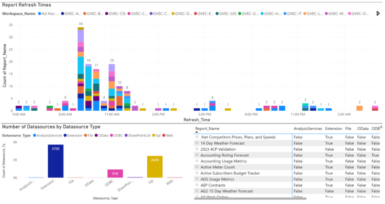
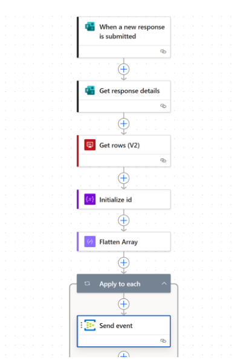
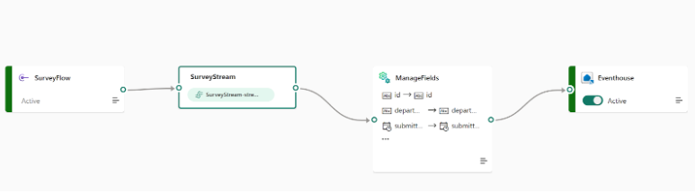

Data Science Portfolio
A collection of my Power BI dashboards, dataflows, and real-time Eventstream processes.

DA Survey Results Dashboard
Interactive survey results dashboard with filters for department and year, including average scores and feature usability ratings.

Power BI Report Usage Overview
Report catalog showing datasource usage, refresh patterns, and report distribution across workspaces.

Survey Results Dataflow
Power BI dataflow used to ingest and transform survey data into structured reporting tables.

Post-Dataflow Eventstream
Event-driven real-time stream triggered after dataflow execution to automate data routing.